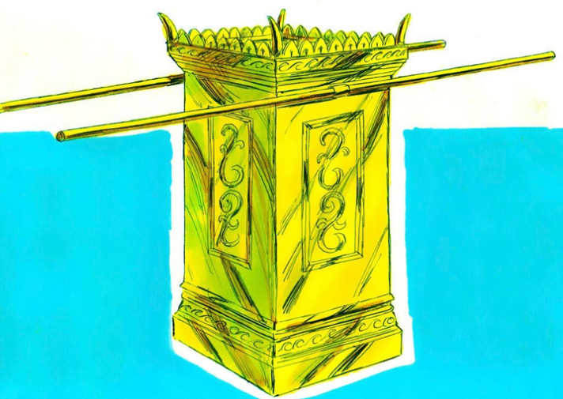

| 讀 | 默想 |
|---|---|
| 1 「你要用皂莢木做一座燒香的壇。 2 這壇要四方的，長一肘，寬一肘，高二肘；壇的四角要與壇接連一塊。 3 要用精金把壇的上面與壇的四圍，並壇的四角，包裹；又要在壇的四圍鑲上金牙邊。 4 要做兩個金環安在牙子邊以下，在壇的兩旁，兩根橫撐上，作為穿槓的用處，以便抬壇。 5 要用皂莢木做槓，用金包裹。 6 要把壇放在法櫃前的幔子外，對著法櫃上的施恩座，就是我要與你相會的地方。 |
會幕裡直接滿足神的事奉是「燒香」。「燒香」象徵人在神面前的禱告、敬拜和交通，正如詩篇所說：「願我的禱告如香陳列在禰面前」（詩一百四十一2），又如啟示錄所說：「這香就是眾聖徒的祈禱」（啟五8）。因此，真正滿足神心意的事奉，就是神得著了向祂禱告的人：這些人借著禱告敬拜，把神當得的榮耀歸給祂；這些人又借著禱告交通，把神的旨意接過來遵行。在新約中，女先知亞拿在聖殿中「晝夜事奉神」（路二37），安提阿教會的同工「事奉主」（徒十三2），他們的「事奉」都是禱告。 |
| 金香壇的示意圖 7 亞倫在壇上要燒馨香料做的香；每早晨他收拾燈的時候，要燒這香。 8 黃昏點燈的時候，他要在耶和華面前燒這香，作為世世代代常燒的香。 9 在這壇上不可奉上異樣的香，不可獻燔祭、素祭，也不可澆上奠祭。 |
大祭司每天必須早晚兩次做三件事：早晚獻上燔祭（二十九39-42），然後進入聖所點燈（7-8節），點燈之後「要燒這香」（7-8節）。這三件事連在一起，才是使神、使人都得著滿足的事奉。我們常常只看重事務的事奉，卻忽視了金香壇的事奉；常常只看重各種屬靈的工作，卻不重視禱告、敬拜，結果開展了許多工作，神卻在其中得不著滿足。實際上，其他的事奉終將過去，只有金香壇的事奉要持續到永永遠遠，在新天新地裡，神的僕人「晝夜在祂殿中事奉祂」（啟七15；啟二十二3） 親愛的天父上帝，我感謝祢。祢是呼召人成為祭司的主。祢叫摩西在會幕中製作了一個燒香的壇。放在會幕裡，隔著幔子，和約櫃相對。祢又告訴我們，在屬靈上這個金香壇上的香，就是聖徒的禱告。祢呼召我們成為一個祭司，最重要的事奉就是在祢面前敬拜、禱告、交通。主阿！我懇求禰幫助我明白。我生命的事奉，最重要的就是禱告、代禱、傾聽祢的話。 |
| 10 亞倫一年一次要在壇的角上行贖罪之禮。他一年一次要用贖罪祭牲的血在壇上行贖罪之禮，作為世世代代的定例。這壇在耶和華面前為至聖。」 親愛的天父，祢又叫亞倫每一年。都在金香壇的角上行贖罪之禮。提醒我們，在每一天生活的事奉中，要持續的支取主耶穌的寶血的救贖和潔淨。使我禱告的事奉成為聖潔。合祢的心意>。 |
「一年一次」指在七月十日的贖罪日（利十六29-30），大祭司要用血「用贖罪祭牲的血在壇上行贖罪之禮」，「從壇上除掉以色列人諸般的污穢，使壇成聖」（利十六19）。雖然金香壇的事奉向著神的事奉，但「人心比萬物都詭詐，壞到極處」（耶十七9），即使是在金香壇前的事奉，事奉的人心中也難免摻雜著自傲自卑、嫉妒紛爭、假冒為善，甚至邪情私欲。神不容許這些「污穢」，因此要持續地用「贖罪祭牲的血」，來保持「這壇在耶和華面前為至聖」。 |
| 11 耶和華曉諭摩西說： 12 「你要按以色列人被數的，計算總數，你數的時候，他們各人要為自己的生命把贖價奉給耶和華，免得數的時候在他們中間有災殃。 13 凡過去歸那些被數之人的，每人要按聖所的平，拿銀子半舍客勒；這半舍客勒是奉給耶和華的禮物（一舍客勒是二十季拉）。 14 凡過去歸那些被數的人，從二十歲以外的，要將這禮物奉給耶和華。 15 他們為贖生命將禮物奉給耶和華，富足的不可多出，貧窮的也不可少出，各人要出半舍客勒。 16 你要從以色列人收這贖罪銀，作為會幕的使用，可以在耶和華面前為以色列人作紀念，贖生命。」 |
「以色列中凡頭生的」都屬乎神（十三2），而以色列整體就是神的「長子」（四22），所以「各人要為自己的生命把贖價奉給耶和華」（12節）。 「贖罪銀」的功用是把人的生命贖出來。每個人都是照著神的形象被造的（創一27），因此無論在短暫的今生高低貴賤、聰明愚拙，在神眼中的價值都相同，神為我們付出的贖價也都一樣：都是以神的獨生子基督的寶血。因此，「富足的不可多出，貧窮的也不可少出，各人要出半舍客勒」（15節）。 |
| 親愛的天父上帝，祢又叫以色烈祢的百姓。按照人數。每一個人。都用半舍客勒的銀子，做生命的贖價。我感謝祢！祢看我們為寶貴，看我們每一個屬靈的生命，有一樣的價值。祢不看我們的身份地位、聰明愚鈍。每一個靈魂在祢的眼中，都一樣寶貴。主啊，我懇求祢。讓我在家庭中、小祖中，能有從祢而來的眼光，看到每一個人屬靈生命的恩賜和價值。奉耶穌基督的名禱告，阿們。 （可以繼續禱告，為家人、小組成員提名禱告。） | |